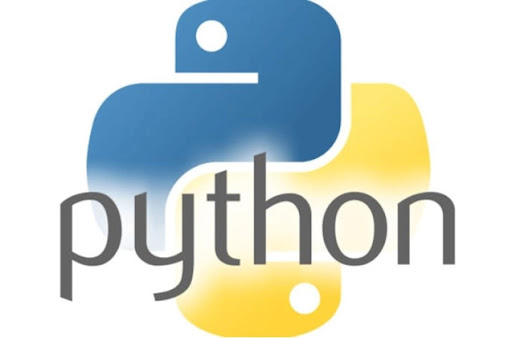

Los cursos
-

El lenguaje de programación Python (Profesor José Luis González)
Python es un lenguaje de programación de alto nivel, con aplicaciones en numerosas áreas, incluyendo programación web, scripting, computación científica e inteligencia artificial. Actualmente es un lenguaje muy popular y muy utilizado por organizaciones como Google, NASA, CIA y Disney. Casi no hay limitaciones sobre lo que se puede desarrollar con Python, incluyendo aplicaciones independientes, aplicaciones Web, juegos, ciencia de datos (Data Science) y modelos de aprendizaje automático (Machine Learning), y mucho más.
-

Desarrollo Web 1(Profesora Mayra Graziano)
En este curso darás tus primeros pasos en el mundo del diseño web adquiriendo conceptos de diseño y maquetado a través de HTML y CSS. Tendrás un acercamiento a Bootstrap, uno de los frameworks más utilizados en la actualidad, el cual te permitirá crear sitios más rápidamente y completamente adaptables a cualquier dispositivo. 👤 Diseño del curso a cargo de: Esteban Hillcoat 👥 Colaboradores: María del Valle Bustos, Florencia Hendel y Diego Fabrizio